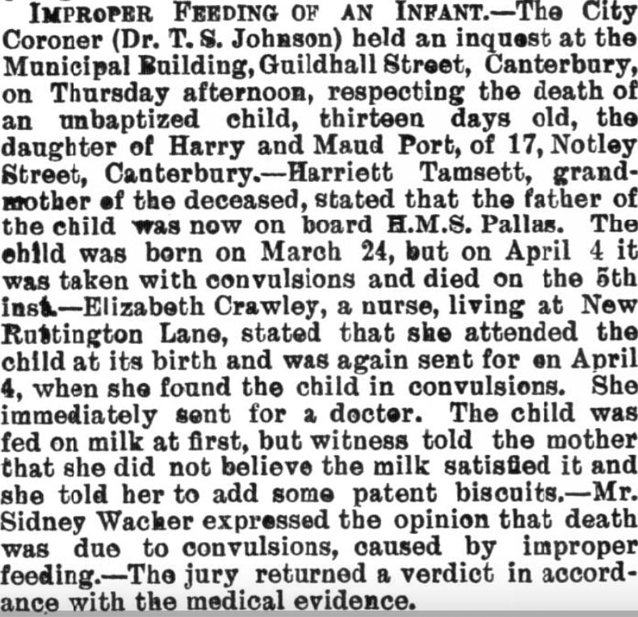
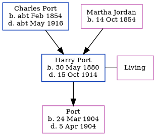

Harry Port 1880 - 1914
[ Home ] | [ Calendar ] | [ Surnames Index ] | [ Family History ]The son of Charles Port (a grocer and confectioner) and Martha Jordan (a shop keeper), Harry Port, the third cousin twice-removed on the mother's side of <a href="I1.html">Nigel Horne</a>, was born in Herne Bay, Kent, England on May 30, 1880<span class="citation">1,2,3</span>, was baptized in Folkestone, Kent, England on Aug 29, 1880 and married Adelaide Tamsitt (with whom he had 1 child, whose first name is unknown) in Canterbury, Kent, England around Nov 1902<span class="citation">4</span>.</p><p>Throughout his life, he lived at Park Terrace, Cheriton, Kent on Apr 5, 1891<span class="citation">1</span>; and on 5 Somerset Road, Cheriton, Kent in 1914. During 1904, he was serving in the military (<em>hMS Pallas</em>) (<em>hMS Hawk</em>).<p>He died on Oct 15, 1914<span class="citation">2</span>.
Parents
- Charles Randle was born c. Feb 1854
- Martha Matilda was born on Oct 14, 1854
Children
- was born on Mar 24, 1904
Citations
- 1891 England, Wales & Scotland Census - Findmypast (was age 10 and the son of the head of the household)
- British Armed Forces And Overseas Deaths And Burials - Findmypast
- England & Wales births 1837-2006 - Findmypast
- England & Wales Marriages 1837-2005 - Findmypast
Media
Canterbury Journal, Kentish Times and Farmers' Gazette - 16 Apr 1904

Folkestone, Hythe, Sandgate & Cheriton Herald - 24 Oct 1914

England Births & Baptisms 1538-1975 - R_885440498
England & Wales births 1837-2006 - BMD/B/1880/3/AZ/000445/022
England & Wales marriages 1837-2005 - BMD/M/1902/4/AZ/000311/168
British armed forces and overseas deaths and burials - BMD/D/MARITIME/928256
Family Tree
Generated by Ged2Site. Last updated on Jul 20, 2025